Für die Person, die das Plugin einrichtet, die Zahlen dahinter pflegt und dafür geradesteht. Von der Installation über die Kalkulationsgrundlagen bis zum Livegang und der Buchhaltung.
Lindenweg16 ERP ist ein einziges WordPress-Plugin, das direkt in WooCommerce lebt. Es gibt keinen externen Dienst, keine Zwischenschicht und keinen nächtlichen Abgleich – die Bestellung im Shop und die Buchung im Lager sind dieselbe Datenbank.
Im Verwaltungsbereich erscheint es als fünf fachlich geordnete Menüs statt eines einzigen langen:
| Menü | Inhalt |
|---|---|
| Verkauf (Laden) | Dashboard, Bestellungen, Versand, Kontakte/B2B, Kasse, Marketing, Loyalty, Events |
| Fertigung (Hammer) | Artikel & Revisionen, Konfigurator, Kapazität, Qualität, Druckjournal, 3D-Drucker & Wartung, Bambu-Lab-Drucker, Produktion |
| Lager (Archiv) | Lager, Lagerplätze/Fertigung/Picklisten, Material, Bedarf |
| Finanzen (Balkendiagramm) | Dashboard: Finanzen, Buchhaltung, Reporting, Berichte |
| Verwaltung (Zahnrad) | Benutzer & Rechte, Einstellungen (mit Reiter „Plugin“ für Firma/DHL/E-Mail), Import & Doku, Support, Anleitungen, Zeiterfassung, Etikettendrucker, Livegang |
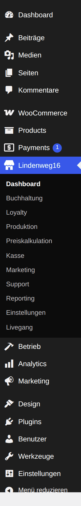
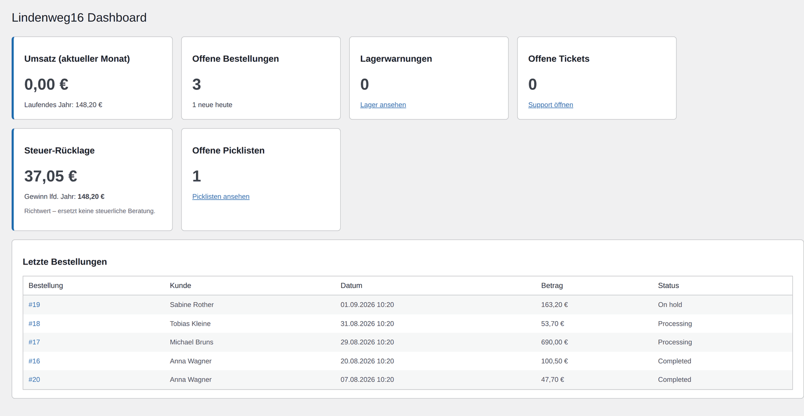
WooCommerce muss installiert und aktiv sein. Ohne WooCommerce bricht die Aktivierung mit einer Meldung ab und das Plugin deaktiviert sich selbst wieder. Außerdem: WordPress 6.2 oder neuer, PHP 7.4 oder neuer.
wp-content/plugins/ kopieren – per FTP, SFTP oder über die Dateiverwaltung des Hosters.lw16_manager und lw16_betrieb werden registriert, und das geschützte Belegverzeichnis wird erstellt.Ein Update ist ein Austausch des Ordners. Beim ersten Aufruf danach läuft der Schema-Abgleich mit und ergänzt fehlende Tabellen und Spalten. Es geht dabei nichts verloren.
Das ist kein Ritual, sondern die einzige Rückfahrkarte. Das Plugin hat keinen Papierkorb.
Die Reihenfolge ist nicht beliebig: Jeder Schritt braucht, was der vorige angelegt hat.
| # | Was | Wo | Warum zuerst |
|---|---|---|---|
| 1 | Firmendaten, Logo, Kleinunternehmer-Kennzeichen | Verwaltung → Einstellungen → Reiter „Plugin“ | Steht auf Rechnungen und Lieferscheinen |
| 2 | Kalkulationsannahmen | Verwaltung → Einstellungen → Kalkulationsannahmen | Ohne sie rechnet jede Kalkulation gegen Standardwerte |
| 3 | Farbattribut und Standardfarbe | Verwaltung → Einstellungen → Farben & Lagerhoheit | Jede Lagerbuchung braucht eine Farbe |
| 4 | Lagerplätze | Lager → Lagerplätze … | Artikel bekommen einen Standardplatz |
| 5 | Drucker | Fertigung → 3D-Drucker & Wartung | Aus Gerätedaten kommt der Maschinenstundensatz |
| 6 | Komponenten (Kleinteile) | Fertigung → Artikel & Revisionen → Komponenten | Werden in Stücklisten gebraucht |
| 7 | Artikel | Fertigung → Artikel & Revisionen → Artikel | Grundlage von allem Weiteren |
| 8 | Revisionen und Stücklisten | gleiche Seite, andere Reiter | Ohne sie keine Herstellkosten |
| 9 | Rabattstaffel | Verwaltung → Einstellungen → Rabattstaffel B2B | Wird bei jeder Händlerbestellung aufgelöst |
| 10 | Benutzer und Rechteprofile | Verwaltung → Benutzer & Rechte | Damit alle arbeiten können |
| 11 | Geräte anbinden: Etikettendrucker, Bambu-Lab, Slicing | Verwaltung → Etikettendrucker, Fertigung → Bambu-Lab-Drucker | Braucht die Gerätedaten aus Schritt 5, siehe Kapitel 12 |
| 12 | Livegang (Probedaten löschen) | Verwaltung → Livegang | Ganz zum Schluss, siehe Kapitel 17 |
Verwaltung → Einstellungen → Reiter „Plugin“
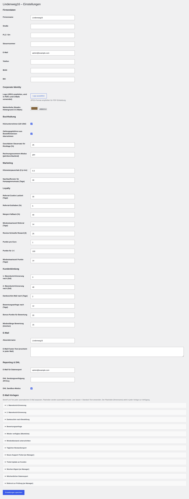
Firmenname, Straße, PLZ/Ort, Steuernummer, E-Mail, Telefon, IBAN und BIC. Diese Angaben erscheinen auf Rechnungen, Lieferscheinen und in den automatischen E-Mails. Trag sie vollständig ein – ein Lieferschein ohne Absender sieht unseriös aus.
| Einstellung | Bedeutung |
|---|---|
| Kleinunternehmer §19 UStG | Ist der Haken gesetzt, wird keine Umsatzsteuer ausgewiesen und alle Beträge sind brutto. Prüf das mit deiner Steuerberatung, bevor du es änderst. |
| Zahlungsgebühren aus Bestellhinweisen übernehmen | Zieht die Gebühren von PayPal & Co. automatisch aus der Bestellung. |
| Geschätzter Steuersatz für Rücklage | Nur für die Rücklagenanzeige auf dem Dashboard. Ein Richtwert, keine Steuerberatung. |
| Rechnungsnummern-Modus | jahr = je Jahr neu durchlaufend. |
Zwei getrennte Abschnitte mit zwei getrennten Zugängen – die DHL vergibt sie einzeln, und der eine funktioniert nicht für den anderen.
| Abschnitt | Wofür | Was hinein gehört |
|---|---|---|
| Reporting & DHL-Sendungsverfolgung | Den Stand einer Sendung abfragen | Ein API-Key für die Tracking-Schnittstelle |
| DHL Geschäftskundenversand | Labels erzeugen und stornieren | API-Key und API-Secret der Anwendung, dazu Benutzer und Passwort des Geschäftskundenportals |
Fürs Frankieren prüft die DHL auf zwei Ebenen: Wer ist die Anwendung (API-Key + API-Secret von developer.dhl.com), und wer ist der Geschäftskunde (Benutzer + Passwort aus dem Geschäftskundenportal). Fehlt eine der beiden Ebenen, lehnt sie ab – ein API-Key allein genügt nicht.
Diese vier Angaben gibt es getrennt für Sandbox und Live – zwei eigene Zeilenblöcke in den Einstellungen. Ein Login, das im Echtbetrieb gilt, weist die Sandbox mit invalid_grant zurück, und umgekehrt. Benutzer und Passwort der Sandbox sind ein von DHL öffentlich dokumentierter fester Testzugang und stehen deshalb schon vorbelegt da – nur den Sandbox-API-Key (und ggf. das -Secret) trägst du selbst aus deiner Sandbox-App auf developer.dhl.com ein.
Beide Passwortfelder zeigen einen gespeicherten Wert nie an. Ein leeres Feld heißt „unverändert“; nur was du hineinschreibst, wird überschrieben.
Dazu gehören die zehnstellige Kundennummer (EKP) und die zweistellige Teilnahme aus dem Geschäftskundenportal. Aus beidem und dem Verfahren des gewählten Produkts baut das Plugin die vierzehnstellige Abrechnungsnummer selbst – sie entscheidet, welcher Vertrag greift und welches Konto belastet wird. Weicht die Teilnahme je Produkt ab, gibt es dafür eigene Felder; sonst gilt überall dieselbe. Beide Felder gelten nur im Echtbetrieb: In der Sandbox bucht die DHL auf ihre eigene Testkundennummer, und das Plugin setzt sie ein, solange der Haken sitzt – deine Angaben bleiben dabei unberührt. Die eigene EKP dorthin mitzuschicken ergäbe eine Abrechnungsnummer, die es in der Testumgebung nicht gibt, und die Ablehnung sähe nach einem Fehler in der Adresse aus.
Nach dem Speichern auf Verkauf → Versand gehen und oben auf DHL-Zugang prüfen klicken. Der Knopf meldet sich einmal an, ohne ein Label zu erzeugen, und sagt im Klartext, was fehlt. Ohne ihn merkt man einen falschen Zugang erst beim ersten Paket – und liest dort eine Meldung, die nach einem Adressproblem aussieht.
910-300-610 für das Thermo-Rollenetikett (103 × 199 mm), A4 für Papier. Was dein Konto kann, steht im Geschäftskundenportal.Nach dem Speichern auf Verkauf → Versand gehen und oben auf DHL-Zugang prüfen klicken. Der Knopf meldet sich einmal an, ohne ein Label zu erzeugen, und sagt im Klartext, was fehlt. Ohne ihn merkt man einen falschen Zugang erst beim ersten Paket – und liest dort eine Fehlermeldung, die nach einem Adressproblem aussieht.
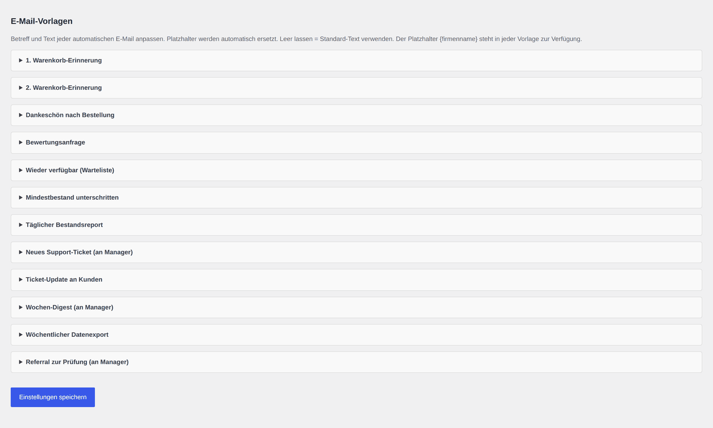
Klick auf das kleine Dreieck vor einer Vorlage, um sie aufzuklappen. Unter jedem Feld stehen die verfügbaren Platzhalter – {firmenname} gibt es in jeder Vorlage. Schreib die Platzhalter genau so ab, mit geschweiften Klammern.
Verwaltung → Einstellungen → Reiter „Kalkulationsannahmen“
Das ist die wichtigste Seite des ganzen Plugins. Hier stehen die Zahlen, aus denen jeder Preis entsteht.
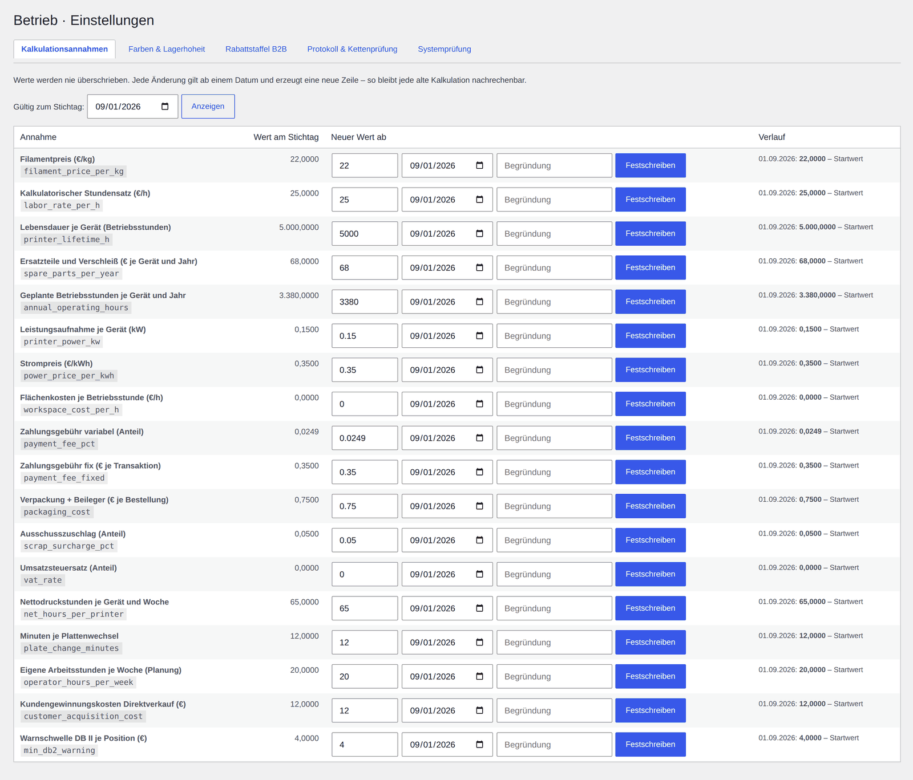
| Annahme | Was sie bedeutet |
|---|---|
| Filamentpreis (€/kg) | Rückfallwert, wenn an einem Druckjob keine Charge hängt |
| Kalkulatorischer Stundensatz (€/h) | Der Satz, mit dem Handarbeit in den Preis eingeht – nicht der bezahlte Lohn |
| Lebensdauer je Gerät (Betriebsstunden) | Grundlage der Abschreibung im Maschinenstundensatz |
| Ersatzteile und Verschleiß (€ je Gerät und Jahr) | Wird über die Betriebsstunden umgelegt |
| Geplante Betriebsstunden je Gerät und Jahr | Der Nenner dieser Umlage – darf nie 0 sein |
| Leistungsaufnahme (kW) und Strompreis (€/kWh) | Ergeben die Energiekosten je Druckstunde |
| Zahlungsgebühr variabel / fix | Anteil und Festbetrag je Transaktion |
| Verpackung + Beileger (€ je Bestellung) | Fällt genau einmal je Bestellung an – deshalb trägt sich ein Set besser als Einzelteile |
| Ausschusszuschlag (Anteil) | Kalkulatorischer Aufschlag für Ausschuss |
| Umsatzsteuersatz (Anteil) | Bei Kleinunternehmerregelung 0 |
| Nettodruckstunden je Gerät und Woche | Kapazitätsplanung |
| Minuten je Plattenwechsel | Bedienzeit, die auf die Teile umgelegt wird |
| Eigene Arbeitsstunden je Woche | Das Wochenbudget in der Zeiterfassung |
| Kundengewinnungskosten Direktverkauf (€) | Fließt in den Deckungsbeitrag II ein |
| Warnschwelle DB II je Position (€) | Ab wann eine Position als unwirtschaftlich markiert wird |
Der alte Wert wird zum Vortag abgeschlossen und bleibt stehen. Rechts im Verlauf siehst du die ganze Geschichte. Mit dem Feld Gültig zum Stichtag oben kannst du dir ansehen, welche Werte an einem beliebigen Tag galten – und damit jede alte Kalkulation nachrechnen.
Verwaltung → Einstellungen → Reiter „Farben & Lagerhoheit“
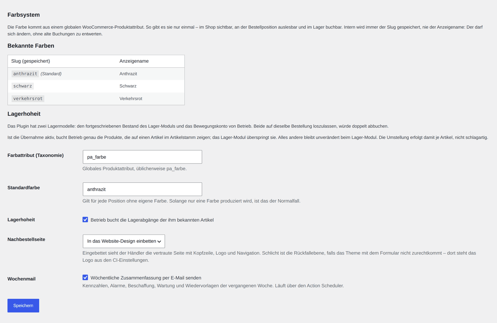
pa_farbe.Es gibt bewusst keine zweite, plugin-eigene Farbliste. Die Farbe muss ohnehin im Shop sichtbar sein, und zwei Listen driften genau dann auseinander, wenn eine Farbe dazukommt. Gespeichert wird immer der Slug (anthrazit), nie der Anzeigename – so verlieren alte Buchungen ihre Zuordnung nicht, wenn der Anzeigename sich ändert.
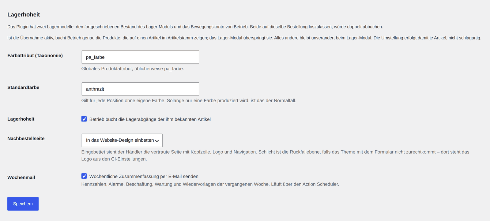
Das Plugin kennt zwei Lagermodelle: den fortgeschriebenen Bestand des alten Lager-Moduls und das Bewegungskonto von Betrieb. Beide gleichzeitig buchen zu lassen, würde jeden Abgang doppelt zählen.
| Stellung | Wirkung |
|---|---|
| Übernahme aktiv | Betrieb bucht die Abgänge genau der Produkte, die auf einen Artikel im Artikelstamm zeigen. Das Lager-Modul lässt diese in Ruhe. |
| Abgeschaltet | Das Lager-Modul bucht alle Abgänge. Das Bewegungskonto bleibt für Verkäufe leer. |
Schalte die Übernahme erst ein, wenn die Artikel angelegt und mit ihren Shop-Produkten verknüpft sind. Sonst laufen Verkäufe von Produkten ohne Artikelzuordnung ins Leere.
Auf derselben Seite stehen zwei weitere Schalter: ob die Nachbestellseite für Händler in das Website-Design eingebettet oder als schlichte eigene Seite mit Logo erscheint, und ob die Wochenmail verschickt wird – eine Zusammenfassung von Kennzahlen, Alarmen, Beschaffung, Wartung und Wiedervorlagen der vergangenen Woche.
Verwaltung → Einstellungen → Reiter „Rabattstaffel B2B“
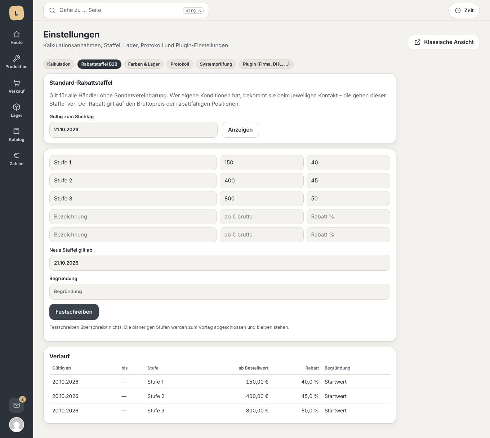
Auch hier wird nichts überschrieben: Die bisherigen Stufen werden zum Vortag abgeschlossen und bleiben stehen. Eine Auswertung alter Bestellungen rechnet weiterhin mit der damals gültigen Staffel.
Verkauf → Kontakte / B2B
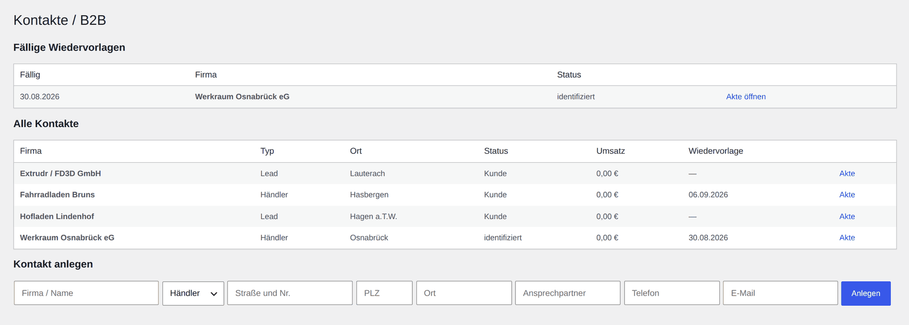
Sonderkonditionen für einzelne Händler stehen nicht in der Standardstaffel, sondern in der Kontaktakte. Klick in der Liste auf Akte öffnen.
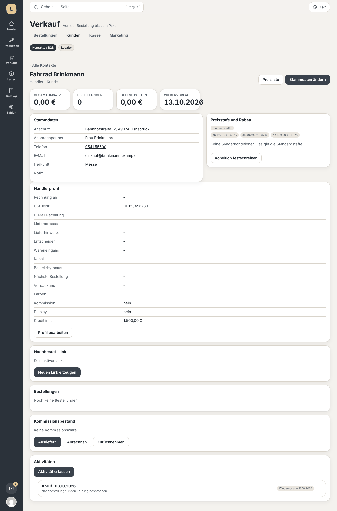
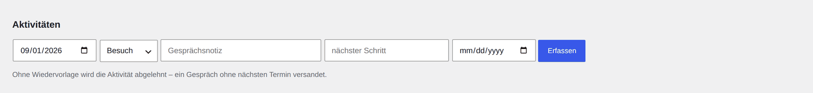
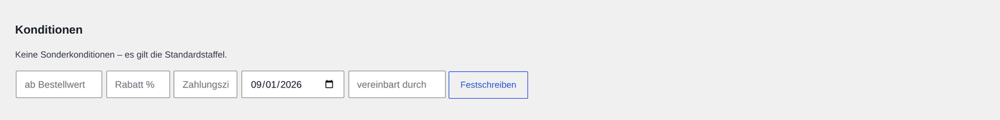
Unter dem Kommissionsbestand steht die Liste: alle verkäuflichen Artikel, je Farbe ein Feld. Oben wählst du den Vorgang — ausliefern, abrechnen oder zurücknehmen —, trägst die Mengen ein und buchst einmal. Eine Auslieferung umfasst selten einen Artikel; Zeile für Zeile zu buchen hieß achtzehn Seitenladungen, und wer dabei im Laden steht und den Karton auspackt, verzählt sich.
Was der Händler von einer Farbe bereits hat, steht fett neben dem Feld. Beim Zurücknehmen und Abrechnen geht es fast immer um genau diese Kombinationen — so rechnet niemand mehr ab, als draußen liegt.
Von sechzig Feldern füllst du drei aus — die anderen erzeugen keine Buchung über null Stück. Steht dagegen in einer Zeile Unsinn, wird gar nichts gebucht: Eine halb gebuchte Lieferung ist schlimmer als eine nicht gebuchte, weil sie aussieht wie eine fertige.
Das ist mehr als Bequemlichkeit. Die Rabattstaffel hängt am Bestellwert. Acht einzeln abgerechnete Artikel ergaben achtmal einen kleinen Wert und damit achtmal die unterste Staffel; die Lieferung als Ganzes erreicht die Stufe, die dem Händler zusteht.
Dieselbe Liste steht in der mobilen Erfassung unter Kommission — gedacht für den Moment, in dem du beim Händler im Laden stehst. Oben Händler und Vorgang wählen, mit Artikel suchen die Liste eindampfen, Mengen eintippen. Unten läuft eine Summe mit, damit du vor dem Buchen siehst, was du gleich buchst.
Eine Zeile, in der schon eine Menge steht, bleibt beim Suchen sichtbar — sonst bucht man blind etwas mit, das man gerade nicht sieht. Nach dem Buchen leeren sich die Felder: Sonst schickte der nächste Druck auf Liste buchen dieselbe Lieferung ein zweites Mal. Ohne Netz wandert die Liste wie jede andere Buchung in die Warteschlange und geht raus, sobald wieder Empfang da ist.
Der ausführliche Weg steht in der Anleitung Produktion, Kapitel 11. Hier nur, was aus Verwaltungssicht wichtig ist.
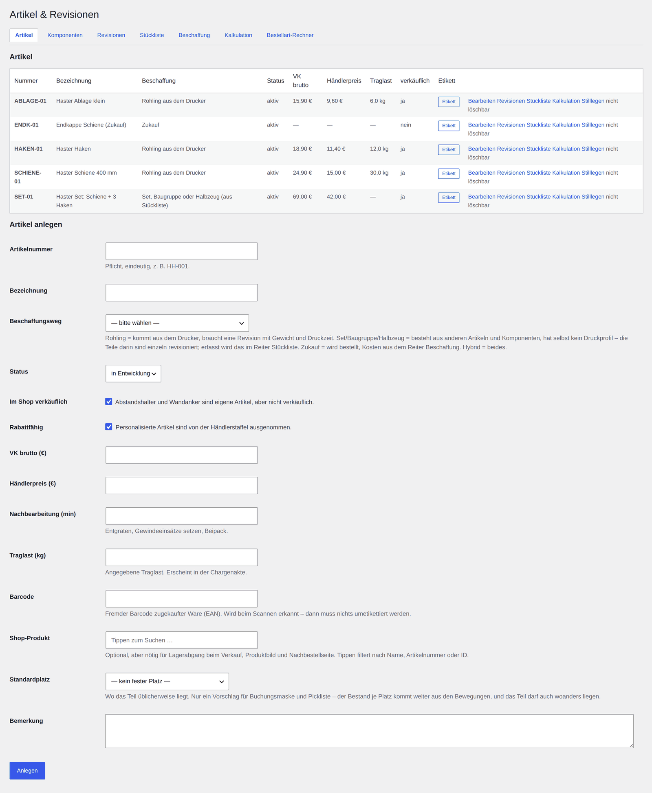
Beschaffungsweg – er entscheidet, ob der Artikel eine Revision, eine Stückliste oder Beschaffungsdaten braucht. Falsch gesetzt, verlangt das System später Dinge, die es gar nicht geben kann.
Verknüpfung zum Shop-Produkt – ohne sie erkennt das Plugin bei einer Bestellung nicht, welcher Artikel gemeint ist, und bucht keinen Bestand ab.
Standard-Lagerplatz – ohne ihn steht auf jeder Pickliste ein Strich statt eines Fachs.
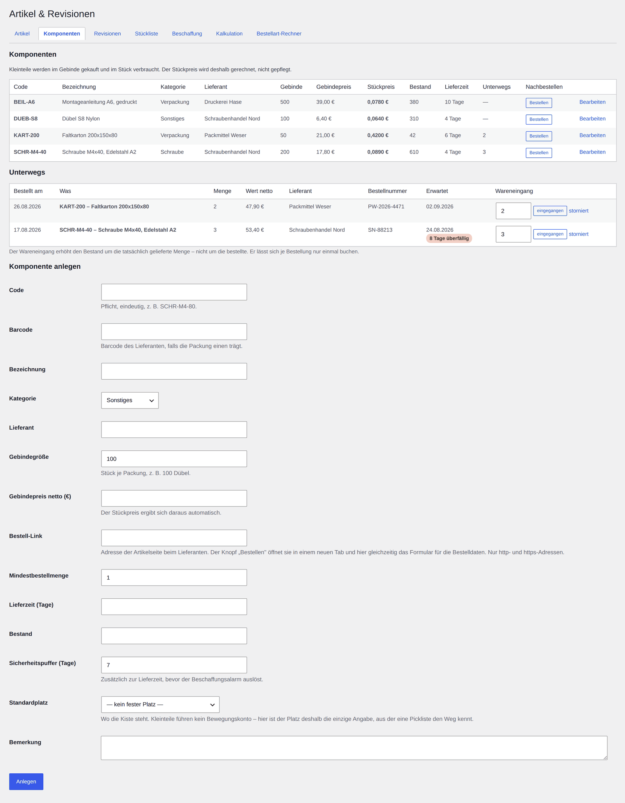
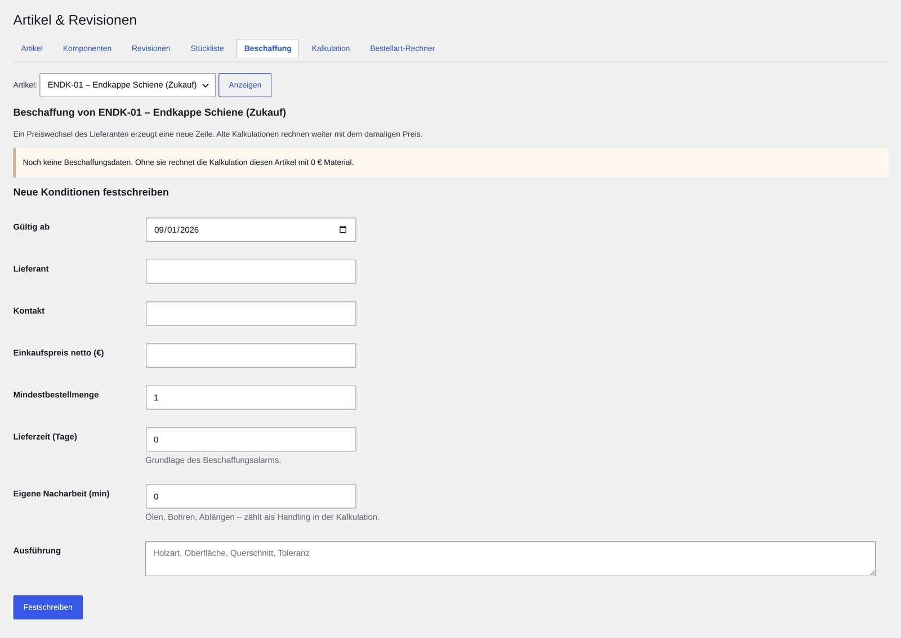
Fertigung → Konfigurator
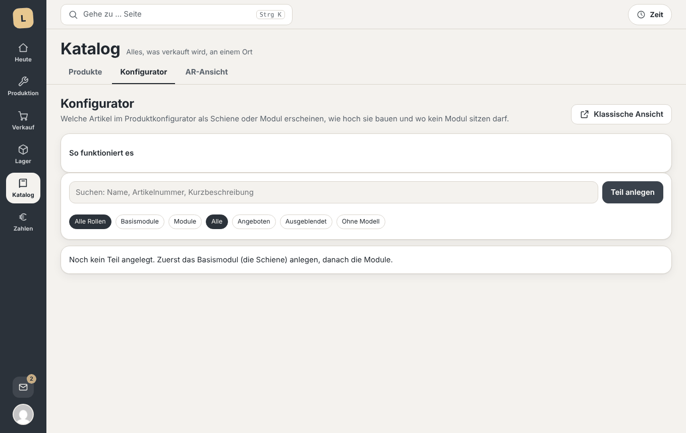
Was ein Kunde konfiguriert, landet als codierte Konfiguration im Warenkorb und wird beim Bestellen wieder in echte Artikel aufgelöst – Lagerabgang und Kalkulation funktionieren also genauso wie bei einem normalen Artikel.
Fertigung → Artikel & Revisionen → Reiter „Kalkulation“
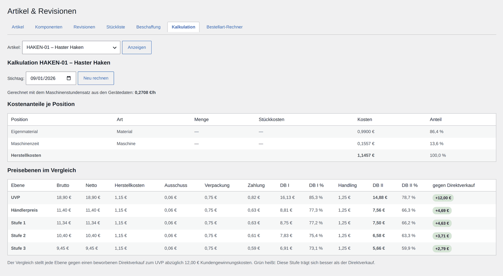
Ist etwas unvollständig – fehlende Revision, fehlende Stückliste, fehlender Gerätesatz –, sagt die Seite das ausdrücklich, statt still mit null zu rechnen.
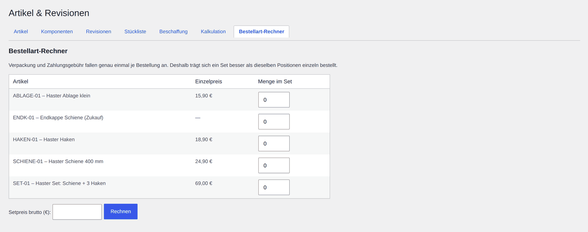
Fertigung → Artikel & Revisionen → Reiter „Kalkulation“, ganz unten
Unter der Kostenaufstellung steht der Abschnitt Preis festlegen – direkt unter der Rechnung, um die es geht.
Es gibt nur eine Stelle, an der ein Preis entsteht: den Artikel. Sobald du ihn speicherst, bekommt das verknüpfte Shop-Produkt ihn als Normalpreis – ohne zweiten Handgriff. Ein laufendes Angebot in WooCommerce bleibt unberührt, sonst wäre eine Preisaktion mit einem Klick weg.
Der frühere Menüpunkt Lindenweg16 → Preiskalkulation ist deshalb verschwunden. Er rechnete dasselbe zwei Menüs entfernt, und der Preis stand danach an zwei Stellen: Wer den zweiten Schritt vergaß, verkaufte weiter zum alten.
Dann stimmen auf einen Schlag viele nicht mehr. Dafür gibt es im selben Abschnitt Alle Preise in den Shop übertragen. Im Alltag brauchst du den Knopf nicht – nur, wenn jemand einen Shop-Preis von Hand verstellt hat.
Sie liegen historisiert unter Verwaltung → Einstellungen → Kalkulationsannahmen. Diese Seite rechnet nur mit ihnen.
Finanzen → Buchhaltung
Die Seite hat Reiter: Belege, Dashboard, Beleg erfassen, Rechnungen, Journal, Kassenbuch, EÜR, Dauerbuchungen, Anlagen, E-Rechnung, Betriebsprüfung, GoBD-Prüfung.
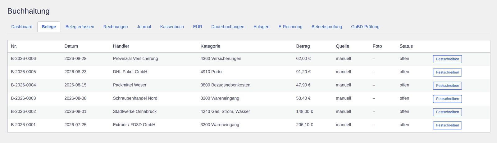
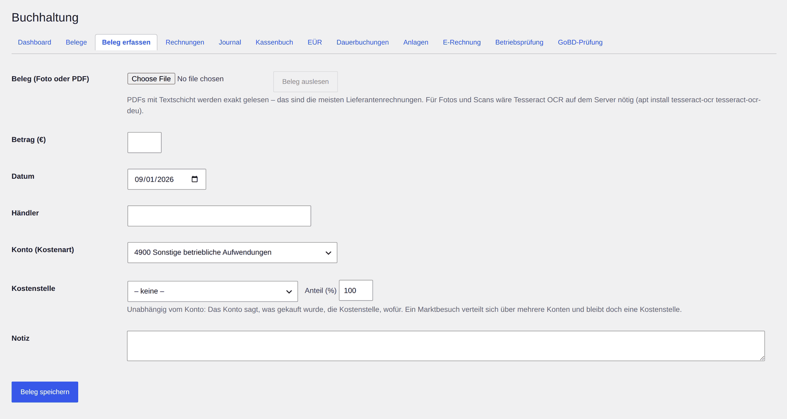
Ein festgeschriebener Beleg lässt sich nicht mehr ändern – das verlangt die GoBD. Ist etwas falsch, wird der Beleg storniert und neu erfasst; beides bleibt sichtbar.
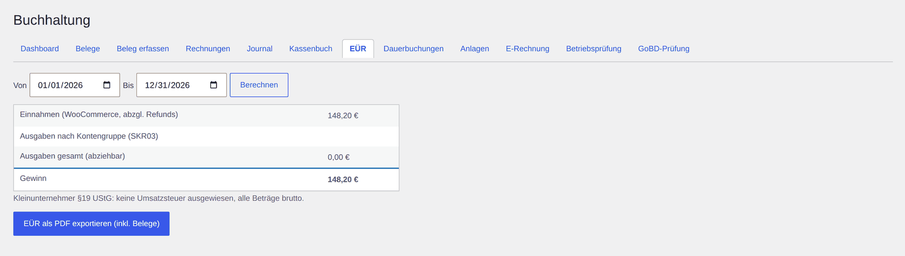
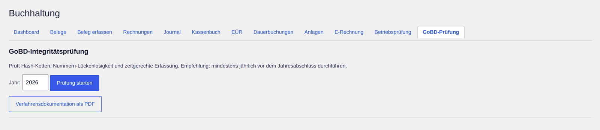
Das Plugin rechnet, was du ihm gibst. Ob eine Ausgabe abziehbar ist, ob die Kleinunternehmerregelung noch passt und was in die EÜR gehört, entscheidet nicht die Software.
Verkauf → Kasse
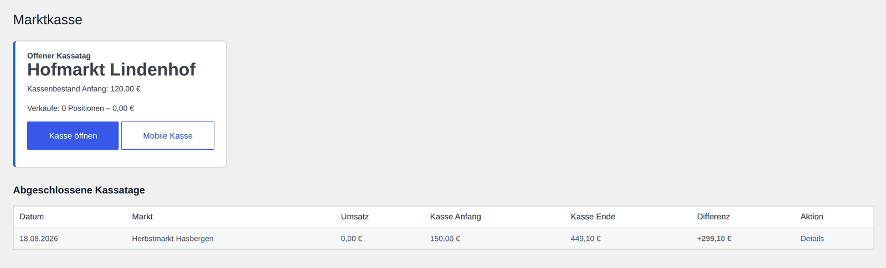
Die Ware steht als Kachelliste da – Produktbild, Bezeichnung, Preis. Ein Klick auf die Kachel füllt Name und Preis, beides bleibt überschreibbar; ein zweiter Klick auf dieselbe Kachel hebt die Auswahl wieder auf. Darüber filtert ein Suchfeld die Kacheln. Das Bild kommt aus dem verknüpften Shop-Produkt; ohne Verknüpfung zeigt die Kachel die Anfangsbuchstaben.
Darunter steht Freier Betrag: Bezeichnung und Betrag eintippen, buchen. Für alles, was es als Artikel nicht gibt – Restposten, Reparatur, Spende. Der Betrag zählt in Tagesumsatz, Beleg und Kassenbuch, bucht aber kein Lager ab.
Preise und Kassenbestände dürfen mit Komma getippt werden – „12,50“ wird als 12,50 € verstanden, nicht als zwölf Euro. Punkt geht genauso.
Verkauf → Marketing
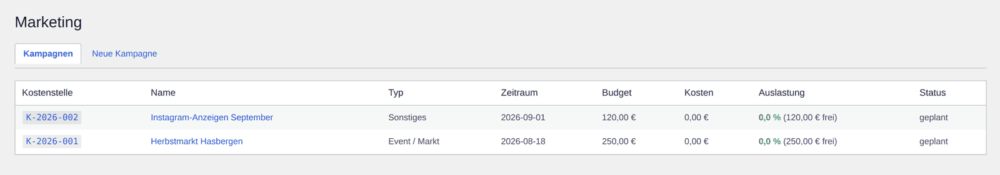
Kosten kommen aus zugeordneten Belegen und aus der Kilometerpauschale (in den Einstellungen änderbar, wird als Eigenbeleg gebucht). Gegenübergestellt werden Marktkassenumsatz und nachgewiesener Shop-Umsatz. Daraus entstehen Umsatz je Euro Werbekosten und Kosten je Bestellung.
Events – ein eigener Menüpunkt neben Lindenweg16.
Ein Event ist eine ganz normale Seite mit Titel, Text und Beitragsbild. Darunter stehen Eckdaten, Zusatzfelder und die Anmeldung. Drei Typen sind angelegt – Social Ride, Markt und Rennen –, weitere legst du unter Events → Eventtypen selbst an.
Jedes Event trägt seine eigenen Felder – beim Social Ride die Tour und die Distanz, beim Markt die Standnummer, beim Rennen die Startzeit. Beim ersten Öffnen schlägt das Plugin die Vorlage zum gewählten Typ vor; jede Zeile lässt sich ändern, löschen und ergänzen, Feld hinzufügen hängt eine neue an.
Für eine Komoot-Tour ein Feld vom Typ Komoot-Tour anlegen und die Adresse der Tour hineinkopieren – die aus der Adresszeile des Browsers, mit oder ohne share_token. Auf der Eventseite erscheint daraus eine eingebettete Karte. Ist die Adresse nicht lesbar, steht dort ein schlichter Link statt der Karte; verschluckt wird nichts.
In der Spalte Darstellung wählst du einen der fünf Stile – dieselben, die Komoots eigener Einbettungsdialog anbietet. Die Auswahl erscheint nur bei diesem Feldtyp.
| Stil | Was man sieht | Höhe |
|---|---|---|
| Klassisch | Karte, Statistiken und Höhenprofil | 700 px |
| Nur Karte | Nur die interaktive Karte, minimale Bedienelemente | 540 px |
| Kompakte Karte | Titelbild und die wichtigsten Statistiken | 260 px |
| Fotostreifen | Galerie zuerst, darunter Titel und Statistiken | 640 px |
| Highlights | Horizontal scrollbare Reihe mit Highlight-Karten | 430 px |
Die Höhe gehört zum Stil und wird mitgesetzt – bei Kompakte Karte stünde sonst ein leerer Streifen darunter, bei Klassisch ein Rollbalken.
Neben der Auswahl steht Vorschau. Ein Klick zeigt die Tour im gewählten Stil direkt hier im Bearbeitungsfenster, noch bevor du das Event speicherst. Stellst du den Stil um, während die Vorschau offen ist, lädt sie sich neu. Gespeichert wird der Stil erst mit dem Event.
Welche Grundkarte zu sehen ist – Karte, Satellit, Gelände –, entscheidet der Besucher im Kartenfenster selbst. Dafür gibt es keinen Schalter in der Einbettung, weder hier noch bei Komoot.
Aus der eingefügten Adresse werden nur Tour-Nummer und Freigabe-Token gelesen, die Einbettung baut das Plugin selbst. Ein Feld, in das man beliebiges Markup kippen kann, läuft auf der eigenen Seite mit – das wäre eine offene Tür, auch wenn heute nur du hineinschreibst.
Auch ohne Benutzerkonto: Name, E-Mail, Häkchen zur Einwilligung. Begleitpersonen trägt man darunter ein – je Klick auf + weitere Person kommt eine Namenszeile dazu, bis zu zehn. Jede Begleitperson braucht einen Namen und belegt einen eigenen Platz; leere Zeilen werden beim Absenden verworfen.
Die Belegung zählt deshalb Plätze, nicht Anmeldungen: Bei 20 Plätzen und einer Anmeldung zu dritt stehen 3 von 20.
Nach dem Absenden geht eine E-Mail mit Bestätigungslink raus. Eine abgesendete, aber nie bestätigte Anmeldung belegt keinen Platz – sonst könnte jeder mit erfundenen Adressen ein Event blockieren. In der Liste steht sie so lange als unbestätigt und verfällt nach sieben Tagen von allein.
Über denselben Link sagt der Teilnehmer später wieder ab. Wird dadurch ein Platz frei, rückt der Erste von der Warteliste automatisch nach und bekommt sofort eine E-Mail – von Hand ist dafür nichts zu tun. Dasselbe passiert, wenn du die maximale Teilnehmerzahl nachträglich erhöhst.
Eine Gruppe rückt nur geschlossen nach, und aufgefüllt wird streng der Reihe nach. Wird ein Platz frei, während vorne eine Dreiergruppe wartet, rückt niemand nach – auch kein Einzelner weiter hinten. Das ist Absicht: Sonst käme die Gruppe nie an die Reihe, weil sie jedes Mal überholt würde. Willst du es im Einzelfall anders, setzt du den Status in der Anmeldeliste von Hand.
In der Anmeldeliste am Event änderst du jeden Status per Klick und lädst die Teilnehmerliste als CSV – eine Zeile je Person, mit dem Vermerk, wer sie angemeldet hat. Als Startliste direkt brauchbar. Die Texte der vier Event-Mails stehen unter Verwaltung → Einstellungen → Reiter „Plugin“ bei den E-Mail-Vorlagen.
Die nächsten Termine erscheinen auf der Startseite als seitlich blätterbare Reihe – ein Event je Ansicht, mit Datum, kleinem Titelbild, Auszug und einem Balken, wie viele Plätze noch frei sind. Auf dem Handy wischt man, am Rechner klickt man die Pfeile links und rechts oder die Punkte darunter.
Die Reihe blättert alle sieben Sekunden von allein weiter. Sie hält an, sobald jemand mit der Maus darüberfährt, sich mit der Tastatur hineintabbt, wischt oder den Tab wechselt – und über den Pausenknopf links neben den Punkten dauerhaft. Wer dort pausiert hat, bleibt pausiert; das kurze Verlassen mit der Maus startet die Reihe nicht wieder.
Hat jemand im Betriebssystem eingestellt, dass Animationen reduziert werden sollen, blättert die Reihe bei ihm gar nicht von allein – und der Pausenknopf erscheint erst gar nicht, weil es nichts zu pausieren gibt. Das ist für manche Menschen kein Geschmack, sondern eine Frage der Verträglichkeit.
Dort ist sie schon eingebaut, du musst nichts tun. Wer sie zusätzlich woanders haben will, hat zwei Wege:
[lw16_events] einfügen. Mit Zusätzen: [lw16_events anzahl="4" typ="social-ride"] zeigt nur die nächsten vier Social Rides, [lw16_events autoplay="0"] eine Reihe ohne automatisches Weiterblättern, [lw16_events intervall="12"] eine mit längerer Wartezeit.Ein Event ohne Beginn taucht dort nicht auf – ohne Datum lässt sich nicht sagen, ob es noch bevorsteht. Trag den Beginn also immer ein, auch wenn die Uhrzeit noch wackelt. Ein Event am heutigen Tag bleibt bis Mitternacht stehen und verschwindet nicht mittags.
Steht gar kein Termin an, fällt der ganze Abschnitt weg – auf der Startseite steht dann keine leere Überschrift. Der Balken erscheint nur, wenn die Anmeldung eingeschaltet und eine maximale Teilnehmerzahl gesetzt ist; ohne Begrenzung steht dort nur Anmeldung offen.
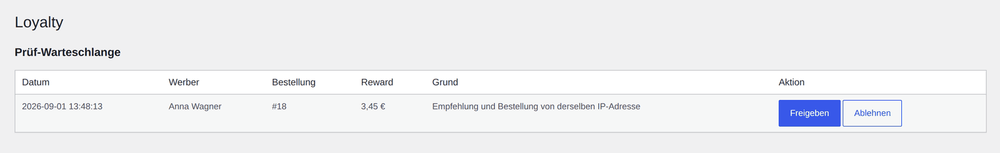
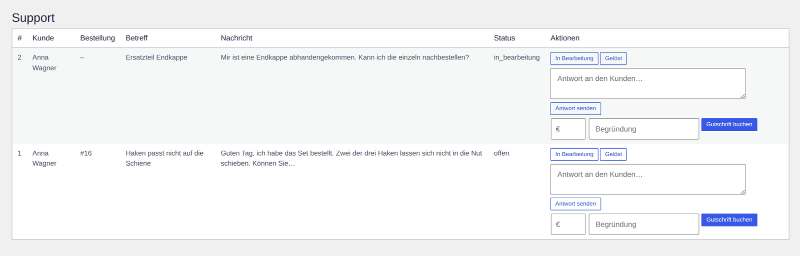
Drei Dienste verbinden das Plugin mit echter Hardware. Alle drei laufen auf einem kleinen Rechner im Haus – üblicherweise ein Raspberry Pi –, alle drei melden sich von sich aus bei der Website und brauchen deshalb keinen offenen Port von außen. Die technische Schritt-für-Schritt-Anleitung mit allen Befehlen steht in raspberry-pi/README.md im Plugin-Ordner; hier steht, was die Verwaltung im Backend dazu tut und wie die Teile zusammenhängen.
| Dienst | Wofür | Seite im Backend |
|---|---|---|
| Etikettendrucker-Client | Druckt Lagerplatz-, Artikel- und Geräteetiketten auf dem Brother QL | Verwaltung → Etikettendrucker |
| Bambu-Bridge | Überträgt geslicte Druckdateien an die Bambu-Lab-Drucker und startet sie; meldet Status und Fortschritt zurück | Fertigung → Bambu-Lab-Drucker |
| Slicing-Worker | Slict angeordnete Platten automatisch mit OrcaSlicer und reiht das Ergebnis in die Bambu-Warteschlange ein | Fertigung → Bambu-Lab-Drucker → Reiter „Slicing-Profile“ |
Jeder dieser Dienste meldet sich mit einem Token an, das beim Anlegen einmalig auf dem Bildschirm steht. Verlässt du die Seite, ist es weg – gespeichert ist im Plugin nur eine Prüfsumme. Dann hilft nur „Token neu erzeugen“, und der Dienst muss neu eingetragen werden. Also: erst das Gerät konfigurieren, dann die Seite verlassen.
Verwaltung → Etikettendrucker
Die Seite hat zwei Reiter: Drucker (anlegen, Token, Status) und Aufträge (die Warteschlange mit Erstellungs- und Druckzeitpunkt). Angelegt wird der Drucker hier, das Token wandert in die .env auf dem Pi. Danach gilt: Wer im Plugin auf „Etikett drucken“ klickt, legt einen Auftrag in die Warteschlange, und der Client holt ihn ab.
Alle Etiketten benutzen bewusst dasselbe Rollenformat DK-11201, damit im Brother nur eine Rolle liegen muss.
Fertigung → Bambu-Lab-Drucker → Reiter „Drucker“
Die Anbindung läuft über den LAN-Modus der Drucker – ohne Bambu-Cloud-Konto. Voraussetzung: Bridge und Drucker stehen im selben Netz.
install-bambu-bridge.sh ausführen. Es erkennt eine vorhandene Etikettendrucker-Installation, lässt sie unangetastet und übernimmt deren Website-Adresse als Vorschlag.Danach erscheint die Druckerkarte im Backend nach kurzer Zeit als Online, mit Modell, Temperaturen und – sobald etwas läuft – Fortschritt und Restzeit. Die Bedienung im Alltag steht in der Anleitung Produktion, Kapitel 6.
Wer ihn kennt, kann Dateien auf das Gerät legen und Drucke starten. Das Plugin zeigt ihn nie wieder im Klartext an, und die Seite verlangt ohnehin ein Rechteprofil mit Zugriff auf die Fertigung. Trotzdem: Der Zugangscode gehört nicht in eine E-Mail und nicht in eine geteilte Notiz.
Hängt der Pi im WLAN statt am Kabel, schaltet Raspberry Pi OS die WLAN-Karte im Leerlauf in den Stromsparmodus. Das äußert sich als sporadische Verbindungsabbrüche, die aussehen wie ein Netzproblem und keins sind. Wie man ihn dauerhaft abschaltet, steht in raspberry-pi/README.md. Kabel ist besser.
Fertigung → Bambu-Lab-Drucker → Reiter „Slicing-Profile“
Ohne diesen Schritt funktioniert die Plattenanordnung trotzdem – nur eben mit Herunterladen und Slicen von Hand. Wer den Worker einrichtet, spart genau diesen Schritt:
.env.slicing des Workers eintragen. Anders als bei den Druckern gibt es hier nur ein Token für einen Worker.raspberry-pi/README.md). Das kann derselbe Pi sein, wenn er genug Leistung hat.Der eigentliche Slice-Aufruf konnte bei der Entwicklung nicht gegen eine echte OrcaSlicer-Installation geprüft werden. Nimm zum Einstieg eine unkritische Testplatte, öffne das automatisch erzeugte Ergebnis einmal in Bambu Studio und sieh es dir an, bevor ein automatisch geslicter Auftrag auf ein echtes Gerät geht.
| Beobachtung | Ursache | Abhilfe |
|---|---|---|
| Bridge-Status Offline, letzter Kontakt liegt zurück | Der Dienst läuft nicht, der Pi ist aus oder ohne Netz | Auf dem Pi systemctl status bambu-bridge und das Journal ansehen |
| Drucker nicht erreichbar | Die Bridge läuft, findet das Gerät im LAN aber nicht | Gerät einschalten; sonst IP geändert (Reservierung im Router) oder Zugangscode falsch |
| Aufträge bleiben „wartend“, obwohl die Bridge online ist | Auf dem Gerät läuft noch ein Druck – die Warteschlange arbeitet einen nach dem anderen ab | abwarten |
| Der Upload zum Drucker bricht ab | Kurze Netzaussetzer; die Bridge wiederholt die Übertragung selbstständig | Erst wenn es bleibt: WLAN prüfen, Energiesparmodus abschalten, notfalls den FTP-Debug-Modus einschalten (siehe README) |
| Platten bleiben auf Wird geslict stehen | Der Slicing-Worker läuft nicht oder hat kein gültiges Token | Dienst prüfen, im Zweifel Token neu erzeugen und beim Worker eintragen |
| „Kein Slicing-Profil für … hinterlegt“ | Für diese Kombination aus Material und Druckermodell fehlen die drei Profildateien | Profile exportieren und hochladen |
Finanzen → Berichte
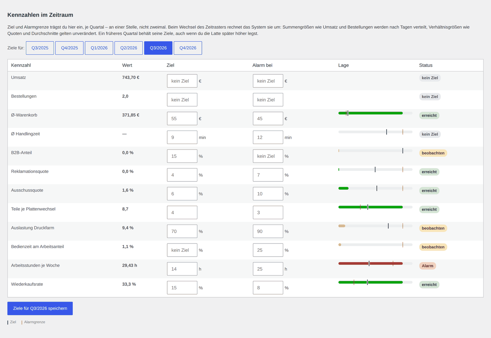
Beim Wechsel des Zeitrasters rechnet das System die Ziele um: Summengrößen wie Umsatz werden nach Tagen verteilt, Verhältnisgrößen wie Quoten bleiben unverändert. Ein früheres Quartal behält seine Ziele, auch wenn du die Latte später höher legst.
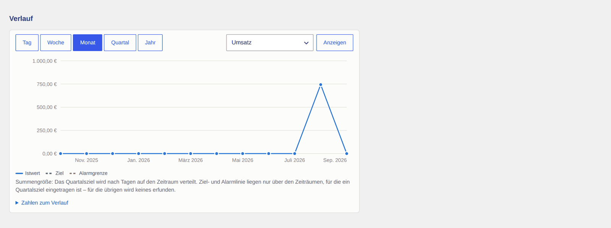
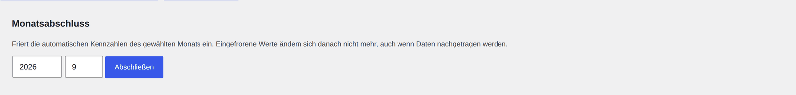
Eingefrorene Werte ändern sich danach nicht mehr, auch wenn jemand später etwas nachträgt. Das ist der Sinn: Ein Monatsbericht, der sich im Nachhinein noch verändert, ist keiner.
Der Export lädt den Betriebszustand als Textdatei herunter: Artikel mit Kalkulation und Bestand, Stücklisten, Kennzahlen, Druckjournal, Arbeitszeit. Namen von Geschäftskunden bleiben draußen, solange du sie nicht ausdrücklich mitgibst – die Kunden sind dann durchnummeriert.
Verwaltung → Einstellungen → Reiter „Systemprüfung“
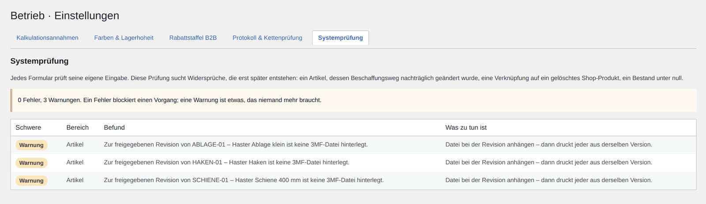
Systemprüfung: Jedes Formular prüft seine eigene Eingabe. Diese Prüfung sucht Widersprüche, die erst später entstehen – ein Artikel, dessen Revision zurückgezogen wurde; eine Stückliste, deren Position stillgelegt ist; ein Gerät ohne Kalkulationsdaten. Lauf sie nach jeder größeren Änderung einmal durch.
Kettenprüfung: Jeder Protokolleintrag enthält den Hash seines Vorgängers. Wird ein Datensatz nachträglich in der Datenbank geändert, bricht die Kette und die Prüfung sagt, an welcher Stelle.
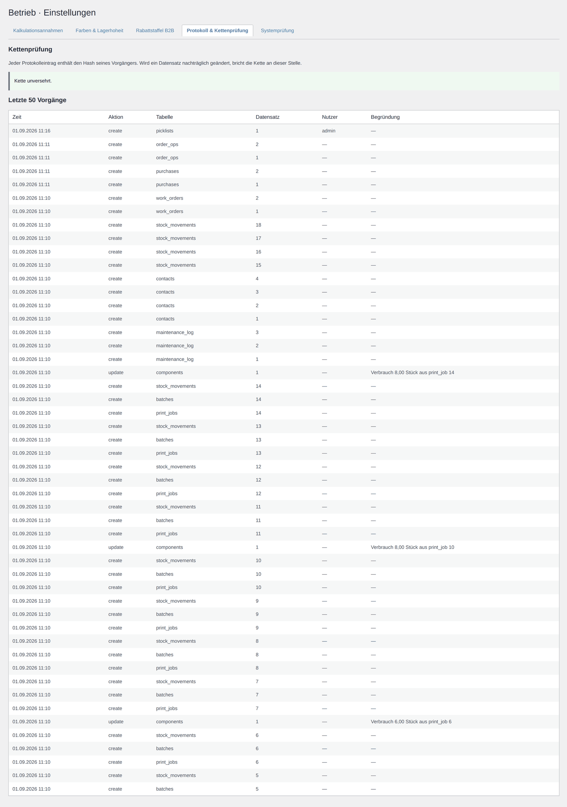
Verwaltung → Import & Doku
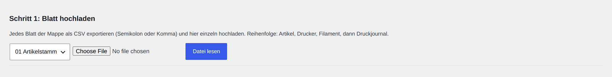
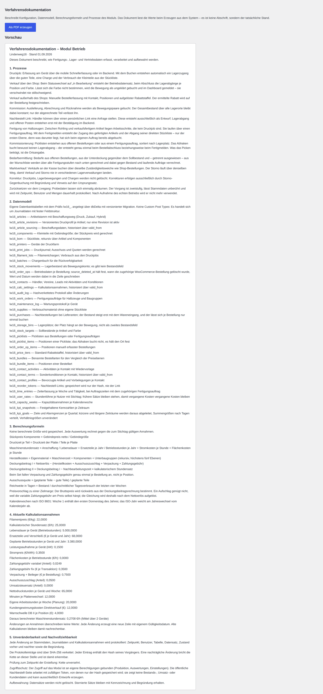
Das Dokument liest die Werte beim Erzeugen frisch aus dem System – es ist also immer aktuell und kein Schnappschuss von damals. Erzeug es einmal jährlich und nach jeder größeren Änderung als PDF und leg es zu den Steuerunterlagen.
Diese Dinge passieren ohne Zutun über den Action Scheduler, den WooCommerce mitbringt:
| Vorgang | Wann | Wo einstellbar |
|---|---|---|
| Lagerabgang bei Bestellung | Beim Statuswechsel der Bestellung | Lagerhoheit (Kapitel 6) |
| Wochenmail an die Manager | Wöchentlich | Verwaltung → Einstellungen → Farben & Lagerhoheit |
| Warenkorb-Erinnerungen | Nach 3 und 48 Stunden | Verwaltung → Einstellungen → Reiter „Plugin“ |
| Dankeschön- und Bewertungsmails | Nach 2 bzw. 12 Tagen | Verwaltung → Einstellungen → Reiter „Plugin“ |
| „Wieder verfügbar“ an die Warteliste | Beim Übergang von leer auf vorhanden | — |
| Täglicher Bestandsreport | Täglich | Verwaltung → Einstellungen → Reiter „Plugin“ |
| Wöchentlicher Datenexport per Mail | Wöchentlich | Finanzen → Reporting |
| Beschaffungsalarm | Laufend berechnet | Vorlaufzeiten je Komponente |
Der Action Scheduler braucht Besucher oder einen echten Cron-Job, um seine Warteschlange abzuarbeiten. Auf einer Seite ohne Verkehr bleiben Aufgaben liegen. Unter WooCommerce → Status → Geplante Aktionen siehst du, was hängt.
Verwaltung → Livegang
Beim Einrichten entstehen Probedaten: Testbestellungen, Probebuchungen, Druckjobs zum Ausprobieren. Vor dem echten Start werden die weggeräumt – sonst stehen sie für immer in jeder Auswertung.
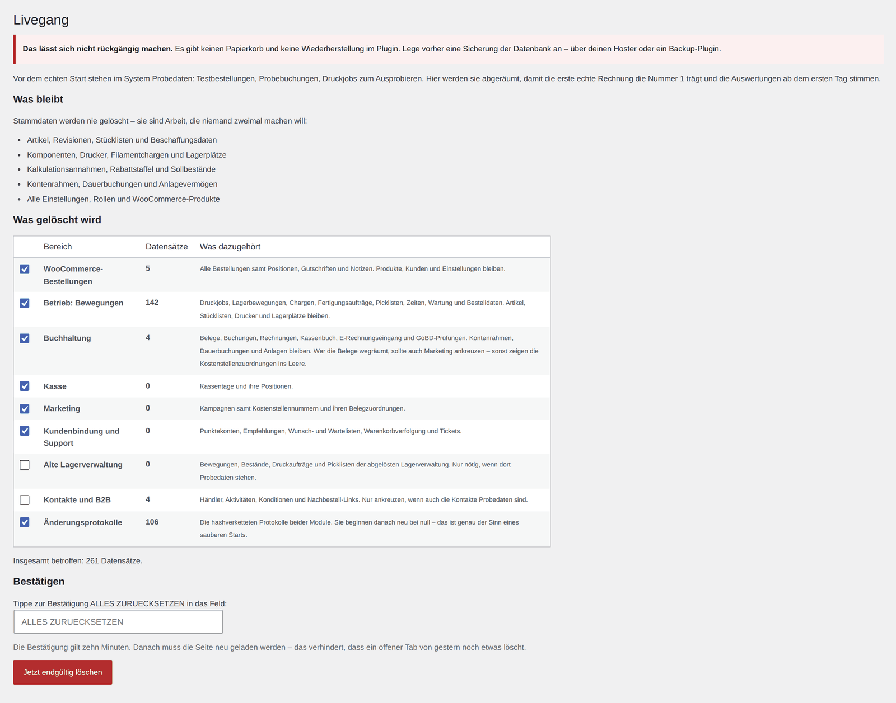
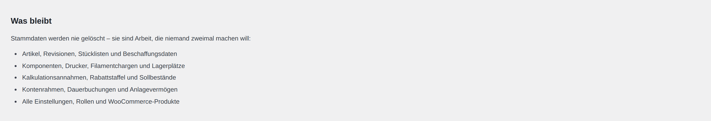
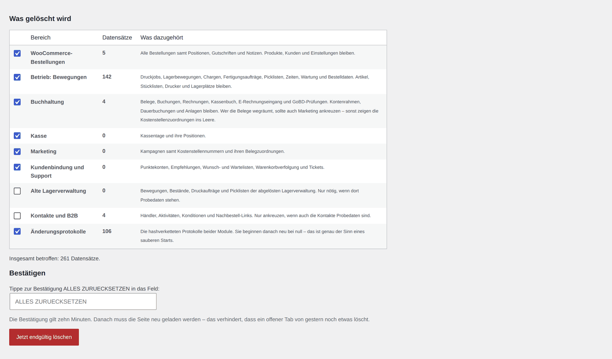
Danach ist dieses Werkzeug nicht mehr zu benutzen – jeder Schnitt wird protokolliert und dieses Protokoll wird selbst nicht gelöscht. Eine Hashkette, die bei null beginnt, ist erklärbar; eine, die mitten in der Geschichte springt, nicht.
| Wann | Was sichern |
|---|---|
| Vor jedem Plugin-Update | Datenbank |
| Vor dem Livegang | Datenbank |
| Vor „Alle Preise übernehmen“ | Datenbank |
| Laufend | Datenbank und das Belegverzeichnis in wp-content/uploads |
Unter Finanzen → Reporting gibt es zusätzlich einen Datenexport, den du dir per E-Mail schicken lassen kannst – wöchentlich automatisch oder auf Knopfdruck. Der ersetzt keine Sicherung des Servers, ist aber eine Kopie der Zahlen außer Haus.
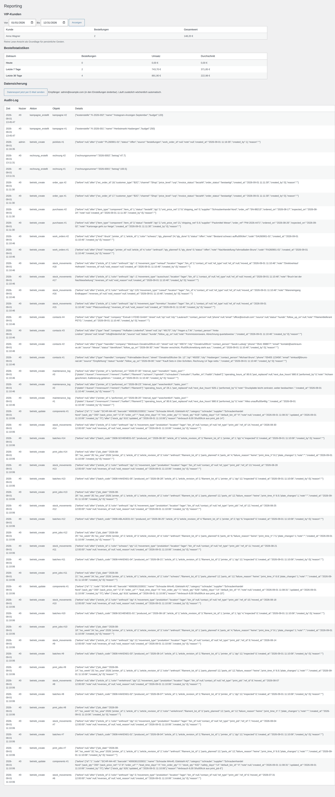
| Beobachtung | Ursache | Abhilfe |
|---|---|---|
| „Lindenweg16 ERP benötigt ein aktives WooCommerce“ | WooCommerce fehlt oder ist deaktiviert | WooCommerce aktivieren, dann das Plugin erneut |
| Das Plugin ist aktiv, aber die Menüs fehlen | WooCommerce wurde nachträglich deaktiviert | WooCommerce wieder aktivieren |
| „Das Attribut pa_farbe existiert noch nicht“ | Das globale Farbattribut fehlt | In WooCommerce unter Produkte → Attribute anlegen (Kapitel 6) |
| Verkäufe erzeugen keine Lagerbewegung | Lagerhoheit abgeschaltet oder Produkt nicht mit einem Artikel verknüpft | Kapitel 6 und Kapitel 8 |
| Bestand doppelt abgezogen | Beide Lagermodelle buchen | Lagerhoheit eindeutig einstellen |
| Kalkulation zeigt „unvollständig“ | Revision, Stückliste oder Gerätedaten fehlen | Die genannte Lücke schließen |
| „Betriebsstunden je Jahr dürfen nicht 0 sein“ | Ohne Nenner lässt sich der Ersatzteilanteil nicht umlegen | Realistischen Wert eintragen |
| Die Kettenprüfung meldet einen Bruch | Ein Datensatz wurde außerhalb des Plugins geändert | Ursache klären; die Stelle steht in der Meldung |
| QR-Links führen auf „Seite nicht gefunden“ | Die Adressen sind nach einem Update nicht neu registriert | Auf der Druckerseite Adressen neu registrieren, oder Permalinks einmal speichern |
| Automatische Mails kommen nicht an | Der Action Scheduler arbeitet nicht, oder der Mailversand des Hosters | WooCommerce → Status → Geplante Aktionen prüfen |
| Ein Beleg lässt sich nicht ändern | Er ist festgeschrieben | Stornieren und neu erfassen (Kapitel 10) |
Lies die Meldung zu Ende. Dieses Plugin schreibt keine Fehlercodes, sondern ganze Sätze – und im Satz steht fast immer schon, was zu tun ist.
Lindenweg16 ERP · Betriebsanleitung Administration · Stand: Plugin-Version 0.14.0 · Übersicht · Produktion · Versand · Personal